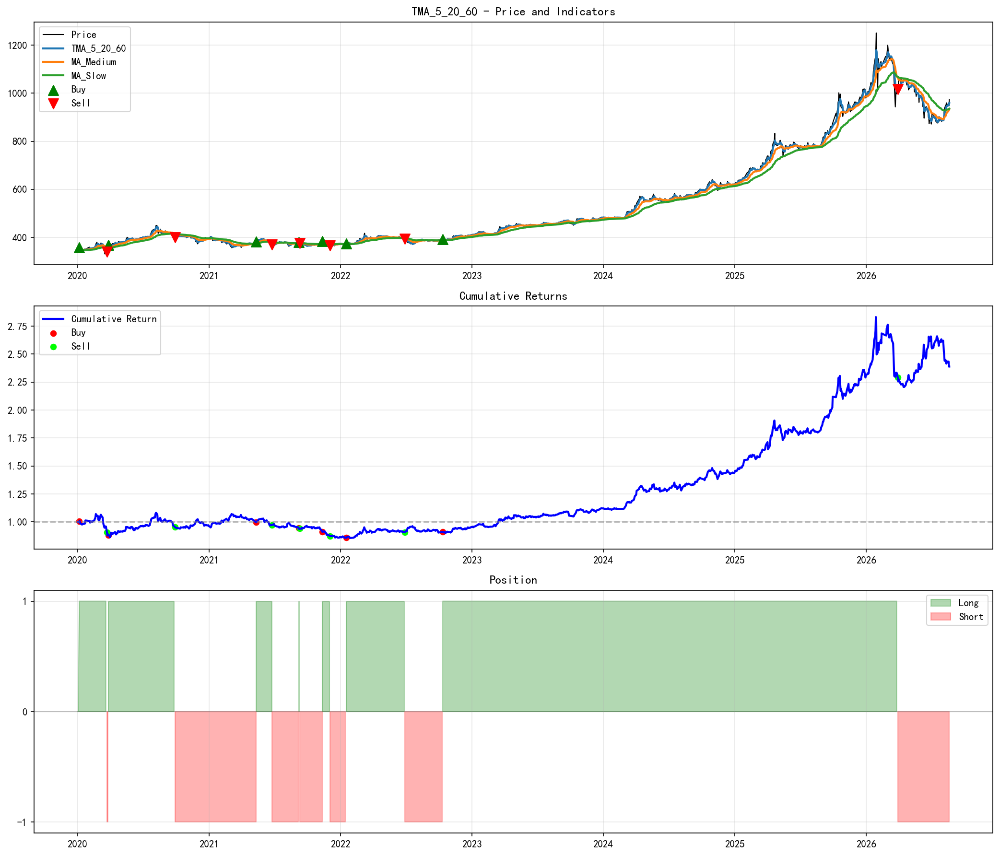
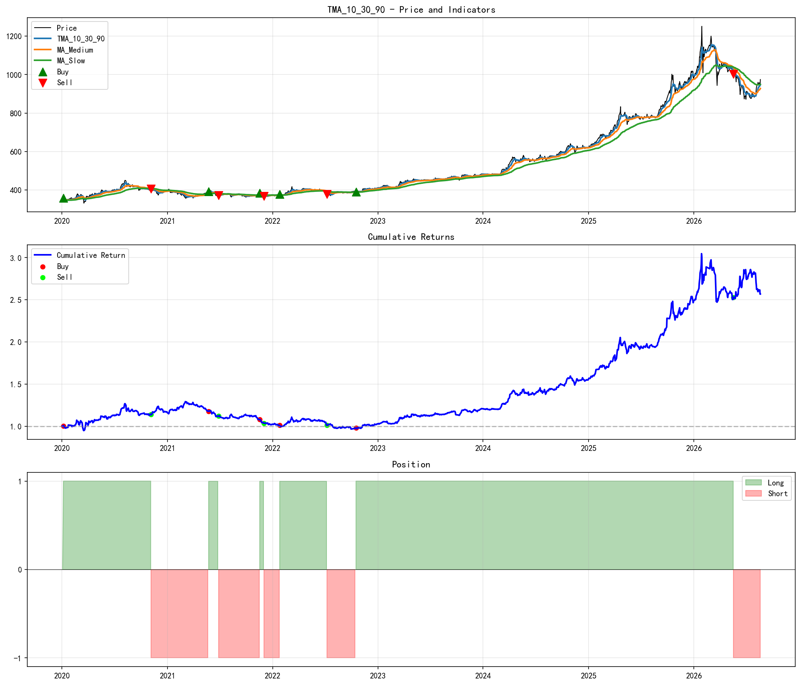
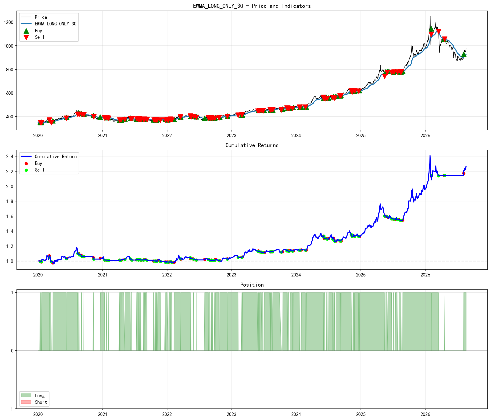
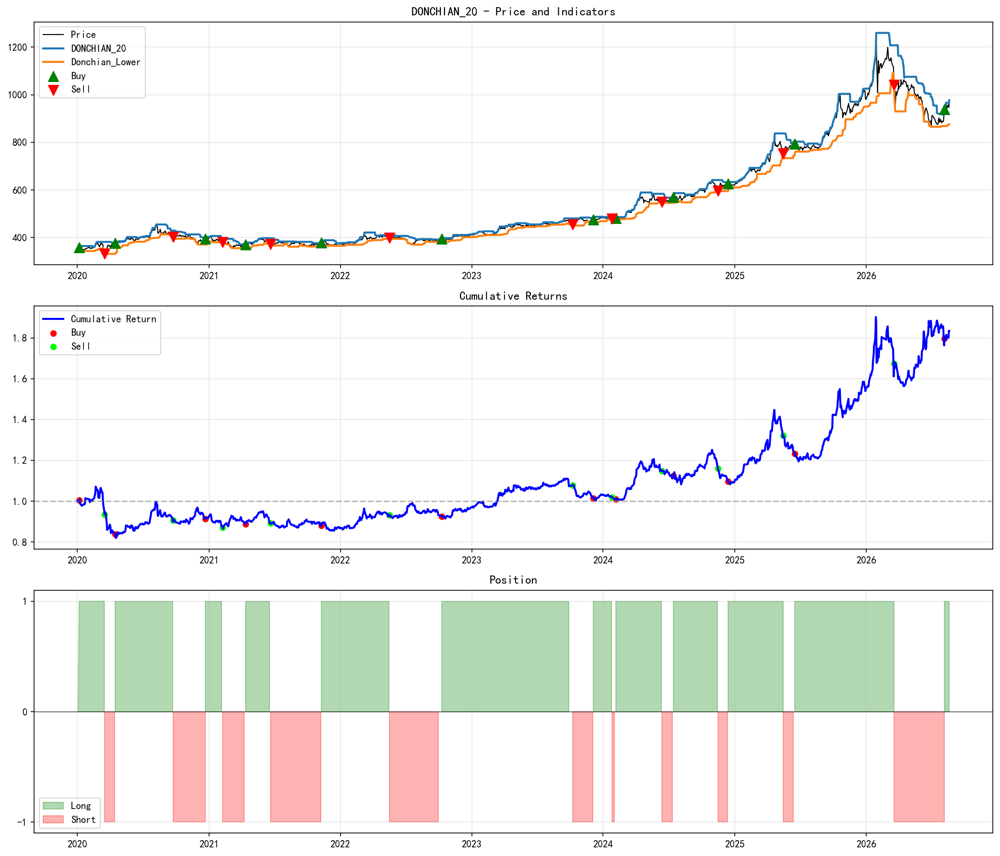
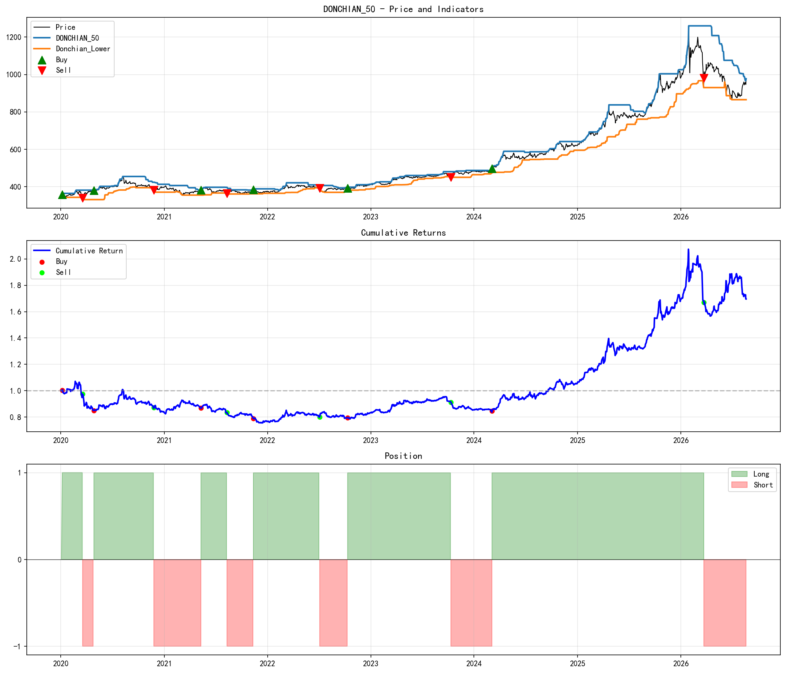
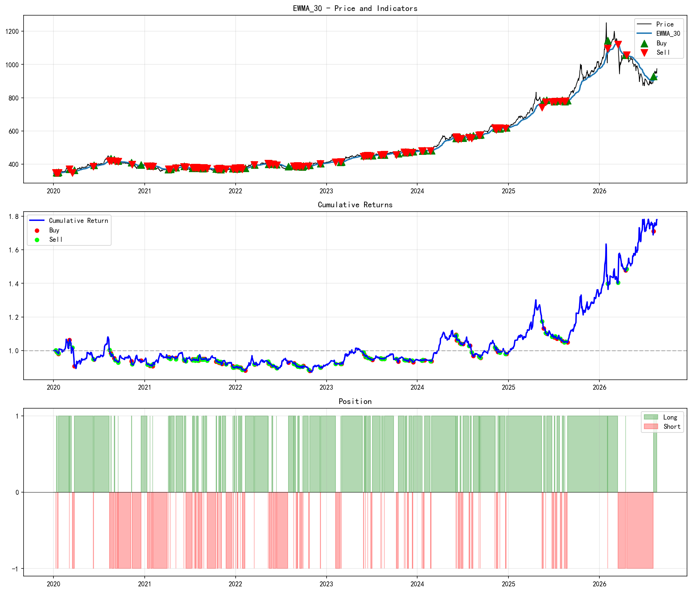
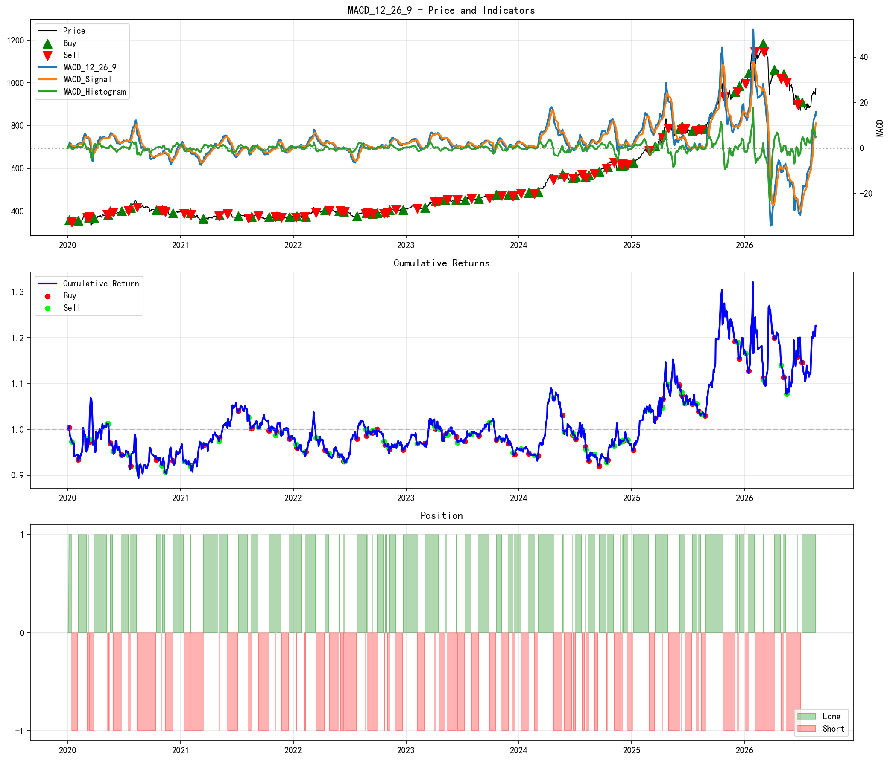
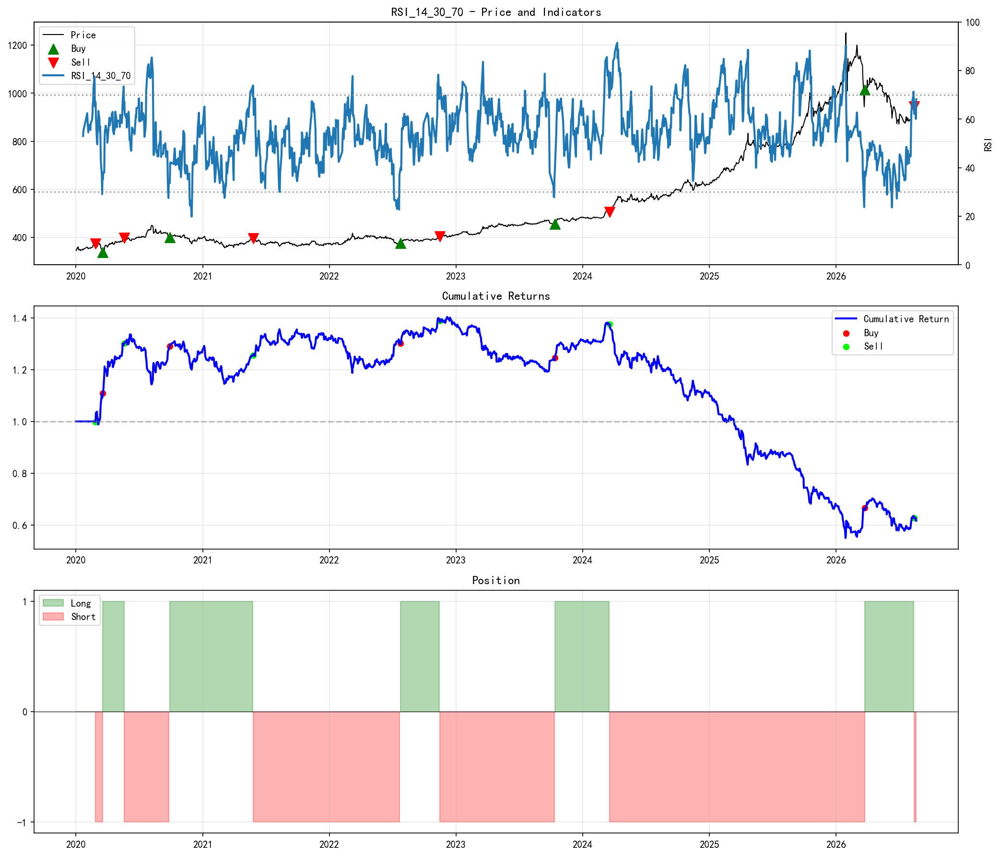
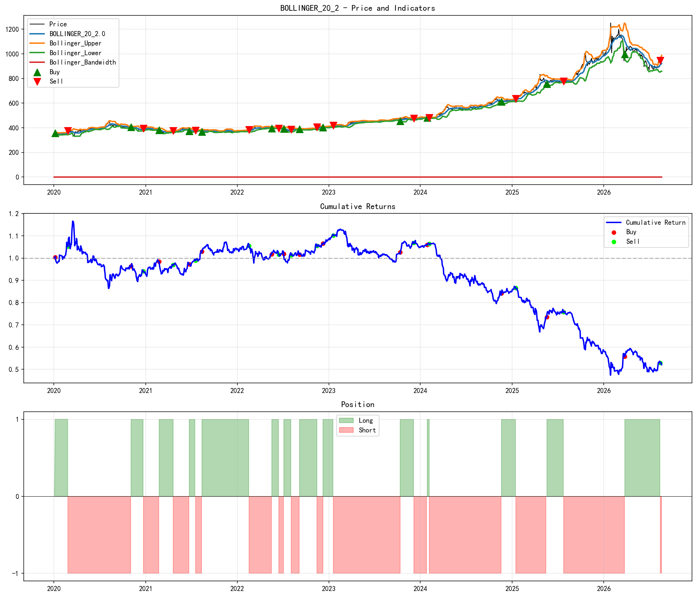
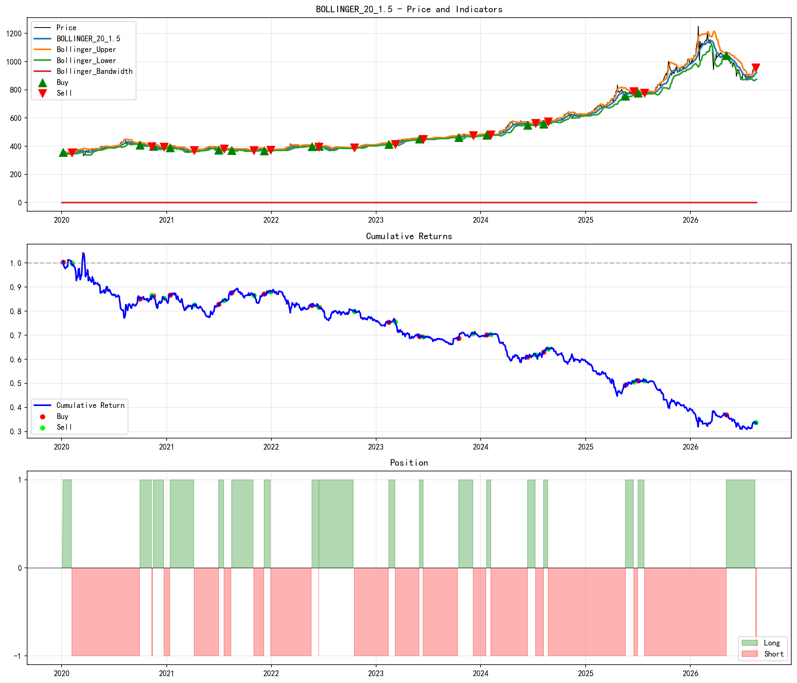

// 从数据采集到策略回测的完整量化研究框架// End-to-end quantitative research framework: data ingestion to backtesting
四层管道设计，模块解耦，可扩展4-layer pipeline, modular, extensible
Wind Excel COM
Parquet 存储Wind Excel COM
Parquet Storage
10 种趋势跟踪
信号生成10 Trend-Following
Signal Generation
历史模拟
T+1 执行Historical Sim
T+1 Execution
三面板图表
性能报告3-Panel Charts
Performance Reports
基于 AUFI.WI 上海期货交易所黄金 Wind 指数 5 年历史数据回测 Backtested on AUFI.WI (Shanghai Futures Exchange Gold Index), 5-year historical data
| 策略Strategy | 累积收益Cum. Return | 年化收益Ann. Return | 最大回撤Max DD | 交易次数Trades | 胜率Win Rate | 平均收益Avg Return |
|---|---|---|---|---|---|---|
| TMA (10/30/90) | 156.75% | 15.28% | -25.20% | 10 | 50.00% | 15.96% |
| TMA (5/20/60) | 138.83% | 14.03% | -22.07% | 14 | 42.86% | 10.85% |
| EWMA Long-Only | 126.11% | 13.09% | -17.27% | 90 | 46.67% | 1.02% |
| Donchian (20) | 83.43% | 9.58% | -23.54% | 23 | 56.52% | 3.05% |
| EWMA Long-Short | 77.98% | 9.08% | -19.57% | 180 | 37.22% | 0.39% |
| Donchian (50) | 69.56% | 8.29% | -29.48% | 12 | 50.00% | 7.23% |
| MACD | 22.65% | 3.13% | -18.48% | 135 | 32.59% | 0.21% |
| RSI | -38.34% | -7.03% | -60.84% | 11 | 45.45% | -6.17% |
| Bollinger (20, 2.0) | -47.89% | -9.36% | -59.37% | 28 | 50.00% | -2.29% |
| Bollinger (20, 1.5) | -66.81% | -15.32% | -70.34% | 36 | 41.67% | -3.10% |
执行价格 = (开盘 + 收盘) / 2 · 信号日 T 生成，T+1 执行 Execution price = (open + close) / 2 · Signal at day T, executed at T+1
点击图片可放大查看Click to enlarge










价格穿越指数加权移动平均线时产生信号。提供多空和仅做多两个版本。Signals generated when price crosses the exponentially weighted moving average. Long-short and long-only variants.
利用快慢 EMA 差值及其信号线的交叉判断趋势方向。经典趋势跟踪指标。Fast/slow EMA difference and signal line crossovers for trend direction. A classic trend-following indicator.
价格突破 N 周期高点买入，跌破 N 周期低点卖出。海龟交易法则的核心。Buy on N-period high breakout, sell on N-period low breakdown. The core of the Turtle Trading system.
基于移动平均和标准差构建波动率通道，捕捉带宽收窄后的突破行情。Volatility bands based on moving average and standard deviation. Captures breakouts after bandwidth contraction.
利用超买超卖区间进行均值回归交易。适合震荡行情中的反转捕捉。Mean-reversion trading using overbought/oversold zones. Effective for catching reversals in ranging markets.
快中慢三条均线的排列关系判断趋势强度。多均线共振减少假信号。Triple moving average alignment for trend strength. Multi-MA resonance reduces false signals.
完整代码已托管在 GitHub，欢迎交流讨论 Full source code on GitHub — contributions and discussions welcome
GitHub →